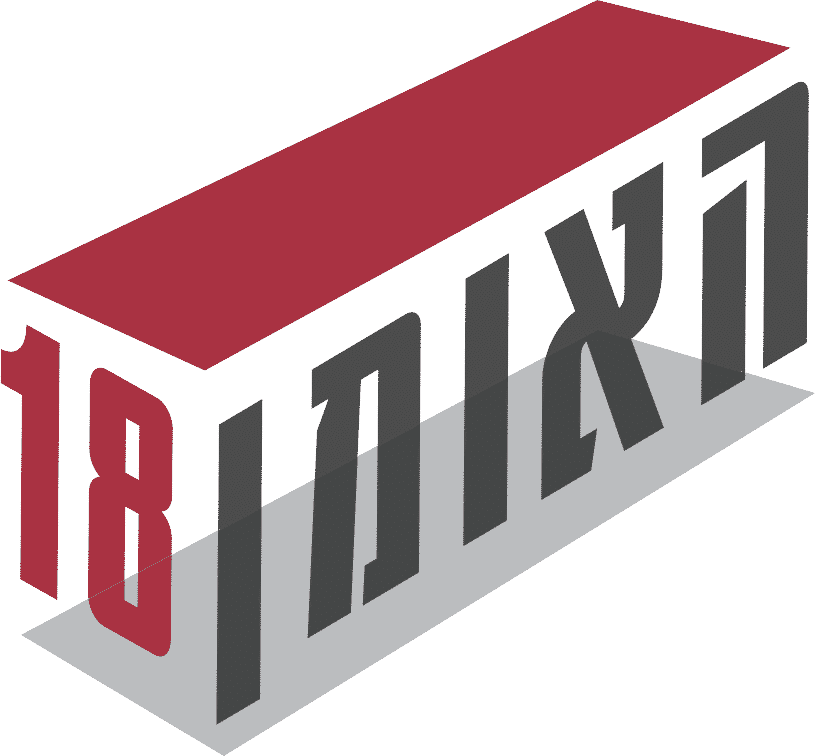

הצהרת נגישות
אתגר נדלן https://lp.haoman18.co.il/
עודכנה בתאריך 2.12.2025
בחברתנו, אתגר פתרונות ושיווק נדלן בע"מ ח.פ. 514939958 אנו פועלים רבות על מנת להנגיש את הארגון ואת אתרי האינטרנט שלנו לאנשים עם מוגבלות על מנת לקדם שוויון זכויות ושקיפות כלפי אנשים עם מוגבלות.
חברתנו מתמחה באיתור קרקעות לייזום בתחום המגורים המסחר והמשרדים, תוך הבנה מעמיקה של צרכי השוק ואיתור הזדמנויות מתאימות.
לחברה ניסיון בייזום פרויקטים בהיקף ניכר ברחבי הארץ, הובלתם לגמר מוצלח תוך הקפדה על עמידה בלוחות זמנים שקיפות ואמינות, כשהמשאב המרכזי שלה הינו רוכשי הדירות ושביעות רצונם .
המפגשים עם לקוחות החברה נעשים במשרדי מכירות ייעודיים ורלבנטיים המוקצים ומונגשים לכל פרויקט ופרויקט, עליהם יש להתעדכן באופן צפציפי ביחס לכל פרויקט. במשרדי החברה אין קבלת קהל.
הסדרי נגישות בחברה
לחברה מטה מרכזי הממוקם ברח' בר- כוכבא 16 (בית נעה) קומה 4 בני ברק.
ניתן להגיע למשרדי החברה באמצעות תחבורה ציבורית, קיימות מספר תחנות אוטובוס ברחובות הסמוכים.
בבניין קיים חניון תת קרקעי (בתשלום) ובו מספר מספק של חניות נכים בקומה 1- וקיימות רמפות ייעודיות המנגישות את המעבר למעליות החניון. כמו כן, רכב נכה רשאי לחנות במקומות מתאימים ברחובות ובחניונים הסמוכים לבניין. הכניסה לבניין נגישה לנכים ולכיסאות גלגלים גם למגיעים מהרחוב ו/או באמצעות תחבורה ציבורית. ובלובי הבניין מצויה עמדת קבלה המאוישת בשומר במהלך שעות הפעילות.
בלובי הבניין קיים שילוט המפרט את שמות העסקים בבניין ומספרי הקומות בהם הם מצויים. משרדי החברה ממוקמים בקומה 4, ישנו שילוט קומתי וכן שילוט על דלת הכניסה למשרדים.
בבניין שלוש מעליות לשימוש הציבור, בלובי הבניין קיימת עמדת קבלה וניתן להיעזר בשומר למידע הכוונה וסיוע, המעליות רחבות ונגישות לכיסאות גלגלים.
לצד הכניסה למשרד ממוקם אינטרקום בגובה של 1.30 מ"ר מהקרקע, הכניסה למשרדים ברוחב 1.1 מטר ונגישה לכיסאות גלגלים. שטח המשרדים הכולל כ- 110 מ"ר והדרך מהכניסה לחדר הישיבות פנויה ונגישה, והישיבה בחדר הישיבות נגישה.
במשרדים לא קיימים חדרי שירותים, השירותים בבניין הינם קומתיים וממוקמים בשטח הציבורי של כל קומה בבניין. בקומה מצויים שירותי נכים הכוללים מתלים וידיות אחיזה.
ככלל אין קבלת קהל במשרדי החברה ופגישות במשרדי החברה תתאפשרנה בתאום מראש בלבד. אנו מתחייבים לעשות את המירב ולאפשר התאמות לכל אדם בעל מוגבלות הנדרש להגיע למשרדי החברה, ובלבד שיתאם הגעתו מראש ויפרט ההנגשות הנדרשות לו טרם הגעתו לפגישה שתואמה לו מראש. ממונה הנגישות וצוות החברה יפעלו בכל דרך אפשרית להנגיש את השירותים לכל אדם, לרבות ביצוע התאמות מיוחדות ואישיות ובמידת הצורך יקוימו מפגשים בכל דרך ובאמצעים הנדרשים להנגשתם לכל אדם.
אתר האינטרנט של החברה
אתר האינטרנט של החברה מצוי בכתובת https://etgar-nadlan.co.il/ הינו אתר תדמיתי בלבד. האתר נועד להכיר לגולש חלק מהשירותים הניתנים ללקוחות החברה ככלל.
האתר עצמו אינו מספק שירות ציבורי (או כל שירות אחר) אלא מפרסם חלק מסוגי השירותים הניתנים באמצעות החברה וללקוחות החברה בלבד. יחד עם זאת אנו סבורים כי על כל עסק באשר הוא, לפעול באופן סביר להנגשת כל מידע שהוא לכל אדם. כפועל יוצא מכך אנו מתחייבים לנקוט בכל מאמץ סביר על מנת להנגיש כל מידע המוצג באתר.
נתקלת בבעיה כלשהי? אנא עדכנו אותנו על מנת שנוכל לתקן, לעדכן ולפעול לשיפור נגישות האתר. אנא פנו בנושא ללא דיחוי בנושא לרכז הנגישות של החברה באחת מדרכי ההתקשרות המפורטות מטה.
מהות אתר אינטרנט נגיש
אתר אינטרנט נגיש, הינו אתר המאפשר לאדם עם מוגבלות, לגלוש באותה רמת יעילות והנאה כגולשים אחרים, תוך שימוש ביכולות המערכת עליה הוא פועל ובאמצעות טכנולוגיות מסייעות לנגישות .
ביצוע התאמות הנגישות באתר האינטרנט
אנו מתחייבים לביצוע כל מאמץ סביר אתר זה עומד בדרישות תקנות שוויון זכויות לאנשים עם מוגבלות (התאמות נגישות לשירות),התשע”ג-2013,בכפוף לסייגים שלהלן:
- התאמות הנגישות בוצעו עפ”י המלצות התקן הישראלי (ת”י 5568) לנגישות תכנים באינטרנט ברמת AA ומסמך WCAG2.0 הבינלאומי.
- הבדיקות נבחנו לתאימות הגבוהה ביותר עבור Chrome
- האתר מספק מבנה סמנטי עבור טכנולוגיות מסייעות ותמיכה בדפוס השימוש המקובל להפעלה עם מקלדת בעזרת מקשי החיצים ו- , Enterמתפריטים וחלונות
• מותאם לתצוגה בדפדפנים הנפוצים כאמור לעיל.
• מותאם לתוכנת קורא מסך NVDA.- - האתר כשלעצמו אינו מספק שירות לציבור, אלא מעניק מידע אודות שירותים משפטיים המסופקים באופן פרטי ללקוחות החברה בלבד.
- באתר משולבות תמונות אווירה המוצגות למטרות נוי בלבד.
התאמות הנגישות באתר בוצעו בהתאם לסימן ג': שירותי האינטרנט בתקנות שוויון זכויות לאנשים עם מוגבלות (התאמות נגישות לשירות) התשע"ג 2013, לתקן הישראלי ת"י 5568 המבוסס על הנחיותWCAG 2.0 , האתר הונגש לרמה AA ובכפוף לשינויים והתאמות שבוצעו במסמך התקן הישראלי.
באתר זה הוטמע תוסף הנגישות enable המסייע בהנגשת האתר לבעלי מוגבלויות.
תוסף הנגישות כולל את סרגל ההנגשה ובו הפונקציות הרלוונטיות וניתן להשתמש בהן באופן הבא:
- כפתור התאמת אתר המאפשר התאמת האתר ותגיות האתר עבור מכשירי עזר וטכנולוגיות עזר לבעלי מוגבלויות.
- כפתור ניווט המאפשר ניווט גם בעזרת מקשי המקלדת למעבר נגיש בין הקישורים שבאתר.
- כפתור השבתה המאפשר השבתת הבהובים ו/או אלמנטים נעים על המסך
- כפתור מנו כרום המאפשר מעבר למצב מונוכרום שחור לבן עבור עיוורי צבעים
- כפתור ספיה (גוון חום) המנגיש באמצעות מעבר לגווני חום.
- כפתור שינוי ניגודיות גבוהה
- כפתור שחור צהוב
- כפתור היפוך צבעים
- כפתור להדגשת תגי כותרת המדגיש בצורה ברורה את כל תגי הכותרות המופיעים באתר.
- כפתור הנגשת קישורים באמצעותו ניתן להדגיש בצורה ברורה את כל הקישורים המופיעים באתר
- כפתור תיאור חלופי לתמונות – באמצעותו ניתן להציג את התיאור החלופי של כל התמונות המופיעות באתר במעבר עכבר
- כפתור המציג תיאור קבוע של התמונות באתר
- כפתור ביטול שימוש בגופן קריא
- כפתור הגדלת גודל הגופנים באתר
- כפתור הקטנת גודל הגופנים באתר
- כפתור הגדלת כל התצוגה לכ־200%
- כפתור הקטנת כל התצוגה לכ־70%
- כפתור הגדלת סמן העכבר
- כפתור הגדלת סמן העכבר ושינוי צבעו לשחור
- כפתור מצב קריאת האתר
- כפתור המציג את הצהרת הנגישות
- כפתור איפוס המבטל את הנגישות
- כפתור שליחת משוב נגישות
- כפתור שינוי שפת הסרגל והצהרת הנגישות בהתאם
בסרגל הנגישות קיימים שני סוגים של הגדלות לנוחיותכם, אך אם תרצו להגדיל עוד את האותיות תוכלו להשתמש בפונקציות המקלדת הבאות:
- מקש Esc יפתח ויסגור את סרגל הנגישות
- מקש Ctrl + יגדיל את הטקסט באתר
- מקש Ctrl – יקטין את הטקסט באתר
- מקש Ctrl 0 יחזיר את האתר לגדלו המקורי
- מקש רווח (SPACE) יוריד את האתר כלפי מטה.
- מקש F11 יגדיל את המסך לגודל מלא – לחיצה נוספת תקטין אותו חזרה.
אנו מחויבים להנגיש את אתר האינטרנט לכלל הגולשים הן ולרבות בעלי מוגבלויות. אנו פועלים בשקידה סבירה ובמאמץ מקסימאלי לוודא כי האתר שמיש ונגיש לכלל האוכלוסיה. יחד עם זאת ייתכן ותמצאו באתר אלמנטים שטרם הונגשו או שלא הונגשו די הצורך ע"י טכנולוגיה מתאימה באופן מיטבי, אנו מתחייבים לעשות את מירב המאמצים לשיפור חידוש והנגשת כל אלמנט ברמה המיטבית. במידה ונתקלתם בקושי בגלישה באתר ו/או בצפייה בתוכנו אנו מתנצלים ונשמח מאוד כי תפנו את תשומת ליבנו לכך .
האתר נבדק באופן תקופתי ע"י רכז הנגישות אחת ל- 6 חודשים, ובנוסף לאחר כל שינוי שיערך באתר. הכל על מנת להבטיח את תחזוקת נגישות האתר.
דרכי פניה לבקשות, תקלות נגישות והצעות לשיפור:
במידה ומצאתם באתר האינטרנט בעיה בנושא הנגישות או שהנכם זקוקים עזרה, אתם מוזמנים לפנות אלינו דרך רכז הנגישות של הארגון – הגב' ליטל קמפו באחת הדרכים הבאות:
- טל': 054-767074 (שעות פעילות בימים א-ה בין השעות 10:00 ל- 16:00).
בפניה טלפונית מחוץ לשעות הפעילות ו/או בהעדר מענה אנושי מכל סיבה, ניתן להשאיר הודעה.
פניה בהודעת דוא"ל לכתובת: lital@etgar-nadlan.co.il יש לכתוב בכותרת ההודעה את עניין הפניה ("בעניין נגישות"), ובתוכן ההודעה יש לפרט את נושא הפניה, ולהקליד בעברית את שם הפונה, מספר הטלפון אליו ניתן לחזור ופרטים נוספים ליצירת קשר.